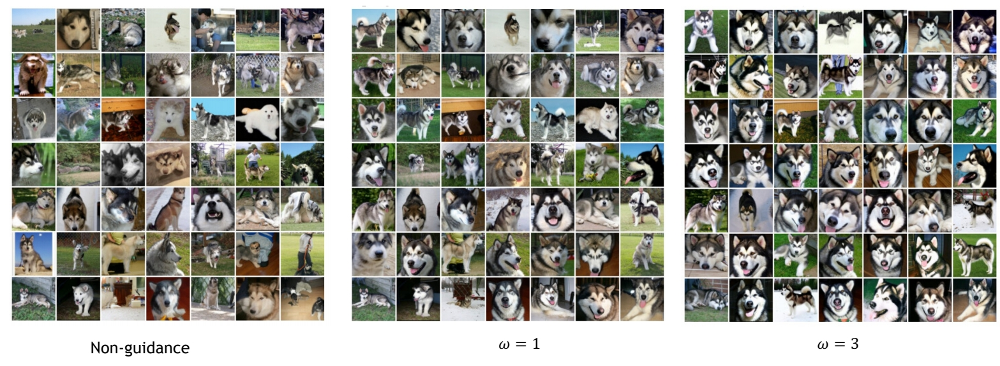

Classifier-Free Diffusion Guidance
https://readpaper.com/pdf-annotate/note?pdfId=4650228075519295489
核心问题是什么?
现有方法：Classifier Guidance
类别引导的方法就是使用额外训练的分类器来提升扩散模型生成样本的质量。
在使用类别引导扩散模型生成之前，扩散模型很难生成类似于 BigGAN 或 Glow 生成的那种 low temperature（和训练数据的分布非常接近的样本，更清晰且逼真） 的样本。
分类器引导是一种混合了扩散模型分数估计与分类器概率输入梯度的方法。通过改变分类器梯度的强度，可以在 Inception 得分和 FID 得分（两种评价生成模型性能的指标）之间进行权衡，就像调整 BigGAN 中截断参数一样。

从上式可以看到，Classifier Guidance 条件生成只需额外添加一个classifier的梯度来引导。从成本上看，Classifier Guidance 需要训练噪声数据版本的classifier网络，推理时每一步都需要额外计算classifier的梯度。
Classifier Guidance 的问题
- 需要额外训练一个噪声版本的图像分类器
- 分类器的质量会影响按类别生成的效果
- 通过梯度更新图像会导致对抗攻击效应，生成图像可能会通过人眼不可察觉的细节欺骗分类器，实际上并没有按条件生成。
本文方法
因此，作者想要探索是否可以在不使用任何分类器的情况下实现类似效果。因为，使用分类器引导会使扩散模型训练流程复杂化，它需要额外训练一个用于处理噪声数据的分类器，并且在采样过程中将分数估计与该分类器梯度混合。
所以作者提出了无需任何依赖于特定目标或者任务设定的 classifier-free guidance 方法。
核心贡献是什么？
目标：训练一个diffusion 模型，不需要训练分类模型，不受限于类别，直接用条件控制即可
假设有一个训好的无条件diffusion model，Classifier Guidance只需要在此基础上再训练一个噪声版本的图像分类器。但classifier-free guidance则需要完全重训diffsion model，已有的diffusion model用不上。
OPENAI 提出了 可以通过调节引导权重，控制生成图像的逼真性和多样性的平衡的 classifier-free guidance，思想是通过一个隐式分类器来替代显示分类器，而无需直接计算显式分类器及其梯度。
大致方法是什么？
原理
“无分类器引导”（Classifier-free guidance）可以在不需要分类器的情况下提供与分类器引导相同的效果。它通过一个隐式分类器来替代显示分类器，而无需直接计算显式分类器及其梯度。
分类器的梯度如下:

把这个分类器带入 classifier guidance 梯度中，得到如下：

当 w=-1 为无条件模型；当 w=0 为标准的条件概率模型。当 w>0 时，是classifier-free guidance。
训练
Classifier-Free Guidance需要训练两个模型，一个是无条件生成模型，另一个是条件生成模型。这两个模型都同一个模型表示，用同一神经网络进行参数化，并且同时训练。
虽然也可以选择独立训练每个单独的模型，但联合训练更简单、不会复杂化训练流程，并且不会增加总体参数数量。
训练时只需要以一定概率将条件置空即可。
✅ 训练时随机地使用“条件+数据”和“None+数据”进行训练。
推断
推理时，分别使用条件生成模型和无条件生成模型生成结果，最终结果可以以上两个结果的线性外推获得。
生成效果可以引导系数可以调节，控制生成样本的逼真性和多样性的平衡。
有效
为什么这比 classifier guidance 好得多？主要原因是我们从生成模型构造了“分类器”，而标准分类器可以走捷径：忽视输入 x 依然可以获得有竞争力的分类结果，而生成模型不容易被糊弄，这使得得到的梯度更加稳健。
缺陷
验证

Large guidance weight \((\omega )\) usually leads to better individual sample quality but less sample diversity.
启发
遗留问题
参考材料
[1] https://blog.csdn.net/jiaoyangwm/article/details/135101303
[2] https://sunlin-ai.github.io/2022/06/01/Classifier-Free-Diffusion.html